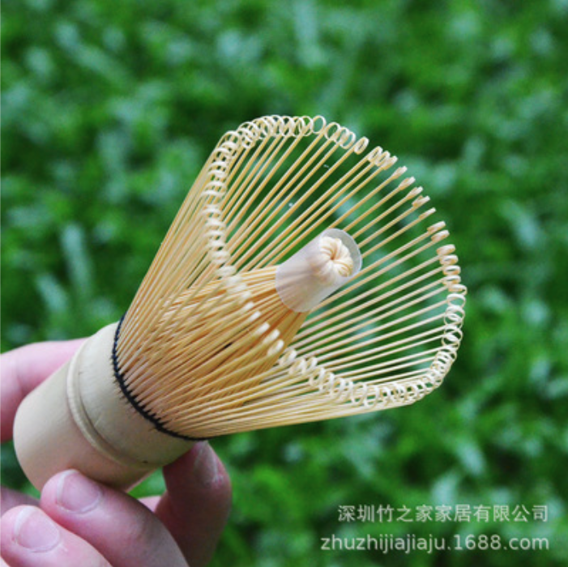

１. 基礎知識
用語と歴史
- 茶道とは：
お茶を通じた精神や文化全体（道・プロセス）のこと。 - 茶事とは：
茶道における正式なお茶会（お客さんをもてなすイベント）のこと。
※抹茶を点てるのは、この茶事の一部である。
参考：https://jogaku.co.jp/sadou/chaji-schedule.html - 茶道の始まり：
1191年に臨済宗の栄西が中国（宋）から茶の種を持ち帰り、抹茶の飲み方を伝えた。
もとは薬用や眠気覚ましの仏教的な儀式として僧侶や武士に広まった。
宇治で「蒸して、乾かし、石臼で挽く」現在の抹茶の製法が確立され、室町・戦国時代に千利休らによって茶の湯文化として成熟した。
自宅で抹茶を点てる最低限のアイテム５つ
抹茶の粉
茶碗
茶せん
茶せんのくせ直し
茶杓
【茶道の一般的なイメージ】
礼儀や作法に厳しそう
【茶道の魅力】
非言語の最高のおもてなしが学べる
- 亭主：お客さんのことを考えた掛け軸、花、お菓子、茶碗、抹茶の味を数ヶ月に渡って考えて、準備する。
- お客さん：亭主がどんな想いで提供物を選んでくれたのかと亭主の気持ちを汲み取る。
２. なぜ茶道を習うのか？・どんな人が習うのか？
茶道を習う理由・きっかけ
-
●
マインドフルネスを実践できるから / 無になれるから（忙しい日常や仕事のリセット）
静かな閉ざされた茶室で、作法に集中するため、雑念が出てこなくなる。瞑想や坐禅、ヨガに近い。 -
●
（女性の場合）所作が綺麗になるから
指の使い方、歩き方、姿勢などの細かい作法に慣れることで、日常生活の所作も自然と綺麗になる。品のある女性と思われたい。 -
●
（男性の場合）道具（特に焼き物）が好きで、使ってみたい。
-
・母親、祖母から勧められたから。・仏教と関連があるから。・抹茶が好きで、自分で点てられるようになりたいから。・相手を思いやる訓練ができるから。
どんな人が習うのか
主婦や中年女性
圧倒的に多い。（主婦は、主婦であることを忘れられる。）
営業マン / 料亭・旅館スタッフ
相手への想いやり / おもてなしを訓練したい。
建築家
将来茶室を作りたい。
３. なぜ自宅で茶せんを使うのか？本格的な抹茶とは？
自宅で茶せんを使って抹茶を作る理由
- お茶会や抹茶専門店ではその場で茶せんで点てた抹茶が出され、それが美味しかったので、自宅でも作ってみたい。
- 自分で点てるプロセス自体が楽しい。
- 自分で良いものが作れるという自己肯定感が得られる。DIYや自炊に近い。
→きめ細かい泡が作れて、口当たりが良い。
※電動ミキサーや泡だて器だと、泡が粗くなったり、ダマが出来やすい。
「本格的な美味しい抹茶」とは？
きめ細かい泡が多くある抹茶
きめ細かい泡が多くあると、飲んだ時にクリーミーで、舌触りが良い。このクリーミーさが抹茶の苦味とマッチする。
また、頑張って点てた甲斐があるという特別感がある。
きめ細かい泡を作るコツ
基本の準備
- ちゃこしを使用すること
- お湯の温度が70、80度程度であること
- 抹茶の粉とお湯の量（70mlのお湯に対し、抹茶2g程度。）
点て方の技術
- 点てるスピードを早くすること（茶碗が深くないと飛び散る。）
茶せんの性能
- 茶せんの種類（穂数、しなり、柄の太さが影響）
【重要】誰でも本格的な美味しい抹茶が作れる茶せんとは？
→ 答え：初心者でもきめ細かい泡を多く作れる茶せん。
→ 答え：初心者でもきめ細かい泡を多く作れる茶せん。
４. 競合分析と課題
きめ細かい泡を作れる茶せんとは？
穂数が最も多い百二十本立が最もきめ細かい泡を作れる。
- 茶道経験者は、穂数が少ない茶せんでも泡を作れたりする。
- 初心者は、穂数が多い茶せんがおすすめ。
- ※茶せんの種類：
https://docs.google.com/spreadsheets/d/1JvCMJhr_BhCMNf2B68mnFbutHtnQ2-OIvED3D3Snruw/edit?gid=1112982196#gid=1112982196&range=A1
従来の百二十本立のデメリット（竹製の場合）：
百二十本立の竹製の場合、穂先が非常に細いため、劣化しやすい。さらに柄が太くなってしまうため、手首のスナップが少しききづらい。
→ そのため、現状は穂数がある程度多く、穂先もそこまで細すぎない、百本立か八十本立が初心者におすすめされている。 根拠はこちら
百二十本立の竹製の場合、穂先が非常に細いため、劣化しやすい。さらに柄が太くなってしまうため、手首のスナップが少しききづらい。
→ そのため、現状は穂数がある程度多く、穂先もそこまで細すぎない、百本立か八十本立が初心者におすすめされている。 根拠はこちら
竹製の茶せん

メリット
穂先が細く、しなりがきくので、泡が点ち安い。
デメリット
使用するたびに、穂先の折れ・切れ、ささくれ、黒ずみなどが発生し、劣化しやすい。また、製造した際に穂先が揃っていない、竹が傷んでいるなど品質の安定が難しい。
茶道経験者は消耗品と認識しているが、初心者は消耗品と理解していない場合が多い。
Amazon竹製のレビューが3.8程度であり、評価を下げている大きな要因が、この品質と劣化のしやすさ。
Amazon竹製のレビューが3.8程度であり、評価を下げている大きな要因が、この品質と劣化のしやすさ。
ポリプロピレン（樹脂製）の茶せん
メリット
耐久性があり、長持ちする。分解して洗えるので清潔。
デメリット
穂先が竹製より少し太く、しなりが効きづらいので、泡がたてづらい。
（ただ、試した商品が竹製より穂先の長さが短い仕様だったため、それが影響している可能性あり。）
５. 自社商品の企画
結論：ポリプロピレンの百二十本立を作る。
1 泡を作りやすい仕様にする
-
百二十本立を採用
（穂数が多いと泡が作りやすい。） -
柄の太さを百本立・八十本立程度にする
握りやすくする。
竹で百二十本立を作る場合、穂数を増やすために竹を割く面積を広くする必要があり、太目の竹を使う必要がある。そのため、竹では細くするのは現実的ではなさそうだが、ポリプロピレンなら実現できる可能性あり。 -
柄に親指を入れる窪みを作る
（グリップを安定させ、振りやすくする。） -
穂先の長さで泡立ちが変わる可能性がある
（今の仮説は長い方が泡だししやすい。）数パターンサンプルを作る。
2 劣化しづらくして、低評価を回避する
竹の百二十本立は劣化しやすいため、ポリプロピレンを採用する。
（他社のポリプロピレンは100本）
（他社のポリプロピレンは100本）
3 色
馴染みのある竹製と同じ薄茶色
高級感が出せる黒（金帯あり）
松岡さんへ相談したいこと
-
1商品開発の仕様の方向性が上記で良いかどうか
-
2「誰でも本格的な抹茶を作れる」というコンセプトに合わせて、どんな世界観の画像を作成するか